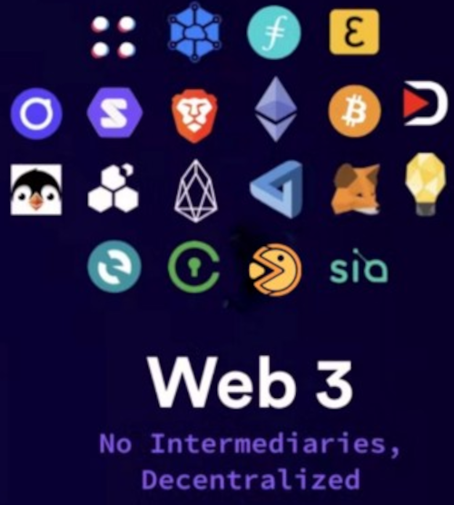

Web3
Bored Ape Yacht Club NFTS

- Ondra Chaloupka (@_chalda)
- Java vývojář v Red Hatu
-
web3 vývojář v Marinade.finance

Read-Only Web
Read-Write Web
Historie Web3

- Web 3.0: Tim Berners-Lee ~1999
- Web3: převzato komunitou v Ethereu (Gavin Wood) ~2014
Web3 je
- sémantický
- decentralizovaný
- volně přístupný a demokratický
- "user-centric"

Read-Write-Own Web